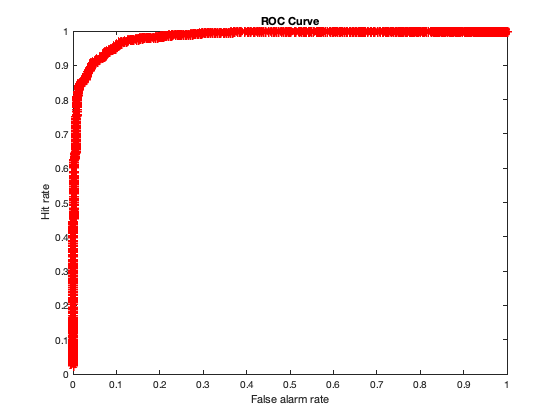

Contents
clear; close all; clc;
a)
The data can be simulated by drawing samples from a standard normal distribution and then scaling the distribution by the variance of the distribution of interest and finally translating it by the mean of interest. The resulting data will have been drawn from a Gaussian distribution of desired mean and variance.
Since the spikes of neurons cannot be negative in number, we can eliminate the values in the sample that are negative by first creating a Boolean array called 'setter' that has 0s if values are negative and 1s if values are positive. We can then compute an element-wise product of the actual sample data with this Boolean array to create a positive sample data.
mean_no_coher = 5; % Mean of noise std_no_coher = 1; % Standard deviation of noise mean_10_coher = 8; % Mean of signal + noise std_10_coher = 1; % Standard deviation of signal + noise samp_size = 1000; % Sample size resp_no_coher = mean_no_coher + std_no_coher^2 * randn(samp_size, 1); % Creating noise sample resp_no_coher_pos_setter = resp_no_coher > 0; % Setter Boolean array resp_no_coher = resp_no_coher .* resp_no_coher_pos_setter; % Excluding negative samples from noise resp_10_coher = mean_10_coher + std_10_coher^2 * randn(samp_size, 1); % Creating signal + noise sample resp_10_coher_pos_setter = resp_10_coher > 0; % Setter Boolean array resp_10_coher = resp_10_coher .* resp_10_coher_pos_setter; % Excluding negative samples from signal + noise fig1 = figure(); histogram(resp_no_coher, 'DisplayName', 'No coherence'); hold on; histogram(resp_10_coher, 'DisplayName', '10% coherence'); legend('Location', 'northwest'); xlabel('Firing rate (spikes/s)') ylabel('Frequency in sample') title('Histogram of firing rates for different stimulus types')
b)
The success of the decoder is given by sensitivity or . For two distributions that have same standard deviation, it is given using the formula:
d_prime = abs(mean_10_coher - mean_no_coher)/std_no_coher;
fprintf("The d' for the task and the pair of stimuli is %d\n", d_prime)
The d' for the task and the pair of stimuli is 3
c)
The decoder over here either observes motion of dots or does not observe motion of dots. The probability of making correct guesses and incorrect guesses depends on where along the x-axis of the two distributions the criterion/threshold is set. Therefore, the maximum likelihood decoder for this problem will involve optimizing the threshold/criterion.
thresholds = 0:0.01:10; % range of thresholds hits = zeros(length(thresholds), 1); % Initializing hits misses = zeros(length(thresholds), 1); % Initializing misses false_alarms = zeros(length(thresholds), 1); % Initializing false-alarms correct_rejs = zeros(length(thresholds), 1); % Initializing correct rejects for i = 1:length(thresholds) threshold = thresholds(i); hits(i) = sum(resp_10_coher > threshold); % Computing the number of hits misses(i) = sum(resp_10_coher < threshold); % Computing the number of misses false_alarms(i) = sum(resp_no_coher > threshold); % Computing the number of false-alarms correct_rejs(i) = sum(resp_no_coher < threshold); % Computing the number of correct rejections end HR = hits./(hits + misses); % Computing hit rate for each threshold FAR = false_alarms./(false_alarms + correct_rejs); % Computing false-alarm rate for each threshold fig2 = figure(); plot(FAR, HR, 'r*-') xlabel('False alarm rate') ylabel('Hit rate') title('ROC Curve')
The percentage correct is given as the ratio of sum of hits and correct_rejects to the total number of trials. The total number of trials can be computed as the sum of hits, misses, false alarms and correct rejects. If the two stimuli are equally likely, then the weightage for hits and correct rejects is the same.
p0 = 0.5; p10 = 0.5; percent_correct = ((p10/p0)*hits + correct_rejs)./... (hits + misses + false_alarms + correct_rejs); % Computing percentage correct [~, optim_threshold_index] = max(percent_correct); % Maximum percentage correct optim_threshold = thresholds(optim_threshold_index) % Computing optimum threshold fig3 = figure(); plot(FAR, HR, 'r-', 'LineWidth', 2) hold on; plot(FAR(optim_threshold_index), HR(optim_threshold_index), 'bo') xlabel('False alarm rate') ylabel('Hit rate') title('ROC Curve') fig4 = figure(); histogram(resp_no_coher, 'DisplayName', 'No coherence'); hold on; histogram(resp_10_coher, 'DisplayName', '10% coherence'); line([optim_threshold, optim_threshold], ylim, 'LineWidth', 2, 'DisplayName', ... 'optimum threshold', 'Color', 'k'); legend('Location', 'northwest'); xlabel('Firing rate (spikes/s)') ylabel('Frequency in sample') title('Histogram of firing rates for different stimulus types')
optim_threshold =
6.4200
If, however, the 10% coherence and 0% coherence trials are not equally likely, then the hits and correct-rejects need to be weighted appropriately. Hits will be weighted by the proportion of 10% coherence trials but the correct-rejects will not be affected for each threshold.
p0 = 0.25; p10 = 0.75; percent_correct = ((p10/p0)*hits +correct_rejs)./... (hits + misses + false_alarms + correct_rejs); % Computing percentage correct [~, optim_threshold_index] = max(percent_correct); % Maximum percentage correct optim_threshold = thresholds(optim_threshold_index) % Computing optimum threshold fig5 = figure(); plot(FAR, HR, 'r-', 'LineWidth', 2) hold on; plot(FAR(optim_threshold_index), HR(optim_threshold_index), 'bo') xlabel('False alarm rate') ylabel('Hit rate') title('ROC Curve') fig6 = figure(); histogram(resp_no_coher, 'DisplayName', 'No coherence'); hold on; histogram(resp_10_coher, 'DisplayName', '10% coherence'); line([optim_threshold, optim_threshold], ylim, 'LineWidth', 2, 'DisplayName', ... 'optimum threshold', 'Color', 'k'); legend('Location', 'northwest'); xlabel('Firing rate (spikes/s)') ylabel('Frequency in sample') title('Histogram of firing rates for different stimulus types')
optim_threshold =
6.1600
d)
Re-running the entire analysis for the same mean but different standard deviation of noise and signal distributions for the neuon:
mean_no_coher_new = 5; % Mean of noise std_no_coher_new = 2; % Standard deviation of noise mean_10_coher_new = 8; % Mean of signal + noise std_10_coher_new = 2; % Standard deviation of signal + noise d_prime_new = abs(mean_10_coher_new - mean_no_coher_new)/std_no_coher_new; fprintf("The new d' for the task and the pair of stimuli is %d\n", d_prime_new)
The new d' for the task and the pair of stimuli is 1.500000e+00
Re-computing the responses for 0% and 10% coherence stimuli
samp_size = 1000; % Sample size resp_no_coher_new = mean_no_coher_new + std_no_coher_new^2 * randn(samp_size, 1); % Creating noise sample resp_no_coher_pos_setter_new = resp_no_coher_new > 0; % Setter Boolean array resp_no_coher_new = resp_no_coher_new .* resp_no_coher_pos_setter_new; % Excluding negative samples from noise resp_10_coher_new = mean_10_coher_new + std_10_coher_new^2 * randn(samp_size, 1); % Creating signal + noise sample resp_10_coher_pos_setter_new = resp_10_coher_new > 0; % Setter Boolean array resp_10_coher_new = resp_10_coher_new .* resp_10_coher_pos_setter_new; % Excluding negative samples from signal + noise
Computing the hit rates and false-alarm rates in the new setting
thresholds = 0:0.01:10; % range of thresholds hits_new = zeros(length(thresholds), 1); % Initializing hits misses_new = zeros(length(thresholds), 1); % Initializing misses false_alarms_new = zeros(length(thresholds), 1); % Initializing false-alarms correct_rejs_new = zeros(length(thresholds), 1); % Initializing correct rejects for i = 1:length(thresholds) threshold = thresholds(i); hits_new(i) = sum(resp_10_coher_new > threshold); % Computing the number of hits misses_new(i) = sum(resp_10_coher_new < threshold); % Computing the number of misses false_alarms_new(i) = sum(resp_no_coher_new > threshold); % Computing the number of false-alarms correct_rejs_new(i) = sum(resp_no_coher_new < threshold); % Computing the number of correct rejections end HR_new = hits_new./(hits_new + misses_new); % Computing hit rate for each threshold FAR_new = false_alarms_new./(false_alarms_new + correct_rejs_new); % Computing false-alarm rate for each threshold
Computing the optimum threshold for equally likely 0% and 10% coherence stimuli
p0 = 0.5; p10 = 0.5; percent_correct_new = ((p10/p0)*hits_new + correct_rejs_new)./... (hits_new + misses_new + false_alarms_new + correct_rejs_new); % Computing percentage correct [~, optim_threshold_index_new] = max(percent_correct_new); % Maximum percentage correct optim_threshold_new = thresholds(optim_threshold_index_new) % Computing optimum threshold fig7 = figure(); plot(FAR_new, HR_new, 'r-', 'LineWidth', 2) hold on; plot(FAR_new(optim_threshold_index_new), HR_new(optim_threshold_index_new), 'bo') xlabel('False alarm rate') ylabel('Hit rate') title('ROC Curve') fig8 = figure(); histogram(resp_no_coher_new, 'DisplayName', 'No coherence'); hold on; histogram(resp_10_coher_new, 'DisplayName', '10% coherence'); line([optim_threshold_new, optim_threshold_new], ylim, 'LineWidth', 2, 'DisplayName', ... 'optimum threshold', 'Color', 'k'); legend('Location', 'northwest'); xlabel('Firing rate (spikes/s)') ylabel('Frequency in sample') title('Histogram of firing rates for different stimulus types')
optim_threshold_new =
6.8700
Computing the optimum threshold for situation where 10% coherence stimuli occurs 75% of the time
p0 = 0.25; p10 = 0.75; percent_correct_new = ((p10/p0)*hits_new + correct_rejs_new)./... (hits_new + misses_new + false_alarms_new + correct_rejs_new); % Computing percentage correct [~, optim_threshold_index_new] = max(percent_correct_new); % Maximum percentage correct optim_threshold_new = thresholds(optim_threshold_index_new) % Computing optimum threshold fig9 = figure(); plot(FAR_new, HR_new, 'r-', 'LineWidth', 2) hold on; plot(FAR_new(optim_threshold_index_new), HR_new(optim_threshold_index_new), 'bo') xlabel('False alarm rate') ylabel('Hit rate') title('ROC Curve') fig10 = figure(); histogram(resp_no_coher_new, 'DisplayName', 'No coherence'); hold on; histogram(resp_10_coher_new, 'DisplayName', '10% coherence'); line([optim_threshold_new, optim_threshold_new], ylim, 'LineWidth', 2, 'DisplayName', ... 'optimum threshold', 'Color', 'k'); legend('Location', 'northwest'); xlabel('Firing rate (spikes/s)') ylabel('Frequency in sample') title('Histogram of firing rates for different stimulus types')
optim_threshold_new =
0
Compared to the previous part, the optimum thresholds are severaly affected by the likelihood of the 10% coherence stimuli. The d' is also low. Additionally, the ROC curve is poor in the sense that AUC is low.